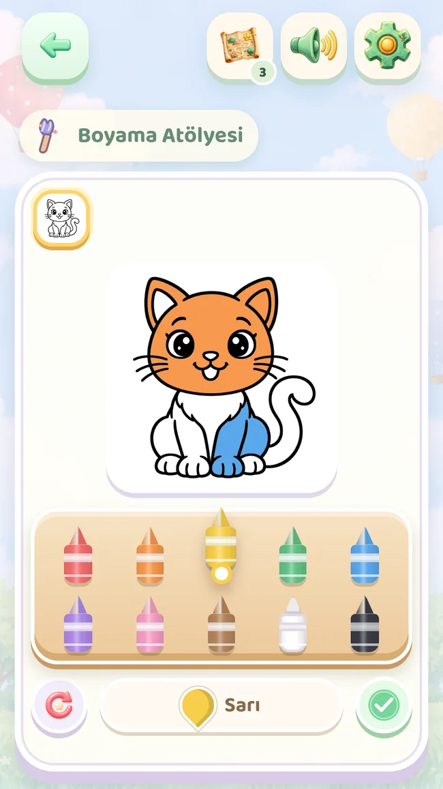
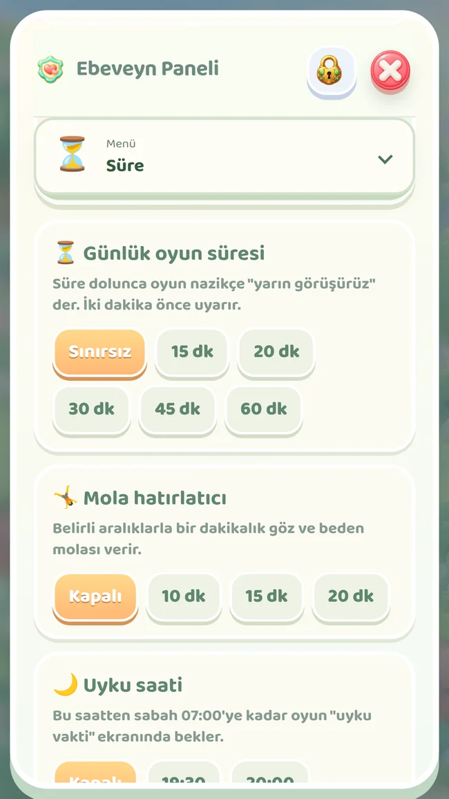

Gerçek oyun ekranı
Bak, eşleştir, dene.
Tanıdık şekillerle küçük eşleştirmeler.
2–5 yaş için küçük maceralar
Bir kedinin peşinden şekillere, renklere ve küçük hikâyelere uzanan bir yolculuk. Dokunsun, denesin, boyasın; siz de keşiflerine eşlik edin.
Şu anda kapalı testte. Google Play erişimi test hesabınızın yetkisine bağlıdır.



Her durakta başka bir merak
Kısa etkinlikler tek bir yolculukta bir araya gelir. Kolaydan zora ilerlerken eşleştirme, çizim, hafıza, sayma ve yaratıcı oyunlar sırayla değişir.
Gerçek oyun ekranı
Tanıdık şekillerle küçük eşleştirmeler.
Gerçek oyun ekranı
Boyama sayfalarında kendi renklerini seçsin.
Tam sürümden bir sahne
Çıkartmalarla kendi sahnesini oluştursun.
Gerçek oyun ekranı
Resimler, küçük ellerde bir araya gelsin.

Birlikte, sizin ritminizde
Yetişkin kontrolüyle açılan ebeveyn alanı; süreyi planlamanıza, yapılanları görmenize ve oyunu birlikte geçirilen zamana dönüştürmenize yardımcı olur.
Günlük oyun süresi, mola hatırlatıcıları ve uyku saati ayarları.
Tamamlanan etkinlikler ve oyun süresi. Bir gelişim testi veya yetenek puanı değildir.
Resimleri kaydedin, paylaşın; A4 boyama çıktısıyla birlikte üretmeye devam edin.
Tanıdık resimler, yeni kelimeler
Birlikte bir resim seçin, adını dinleyin, sonra evde aynı nesneyi bulun. Beş dil de ücretsiz ve tam sürümde kullanılabilir.
Türkçe ve İngilizce ses kayıtları uygulamaya dahildir, çevrimdışı çalışır. İspanyolca, Brezilya Portekizcesi ve Endonezce cihazın konuşma sesini kullanır; sesin bulunması ve çevrimdışı kullanım yüklü dil paketine bağlıdır.
Ücretsiz duraklar tekrar oynanabilir. Kazanılan çizimler ve madalyalar kalır. Tam koleksiyon, ebeveynin isteğe bağlı tek seferlik satın almasıyla açılır.
Oyunda ebeveyn alanını açın ve Tam sürüm bölümüne girin. Güncel fiyat ve ödeme onayı Google Play’de gösterilir. Bu web sitesi ödeme almaz; abonelik yoktur.
Tam koleksiyona erişim açılır; duraklar yine sırayla tamamlanır. Satın alma ilerlemeyi atlatmaz.
Android uygulamasının oyun içerikleri çevrimdışı çalışır. Satın alma ve geri yükleme internet gerektirir. Diğer üç dilin çevrimdışı sesi cihazdaki dil paketine bağlıdır.
Aynı Google Play hesabıyla ebeveyn alanından satın almayı geri yükleyebilirsiniz. Oyun ilerlemesi ve çalışmalar cihazda saklanır; satın almayı geri yüklemek ilerlemeyi otomatik taşımaz.
Hayır. Yıldızlar oyun içi ödüllerdir. Ebeveyn özeti oynanan etkinlikleri ve süreyi gösterir; çocuğun gelişimini veya yeteneğini puanlamaz.
Bir kedinin peşinden şekillere, renklere ve küçük hikâyelere uzanan bir yolculuk. Dokunsun, denesin, boyasın; siz de keşiflerine eşlik edin.
Şu anda kapalı testte. Google Play erişimi test hesabınızın yetkisine bağlıdır.